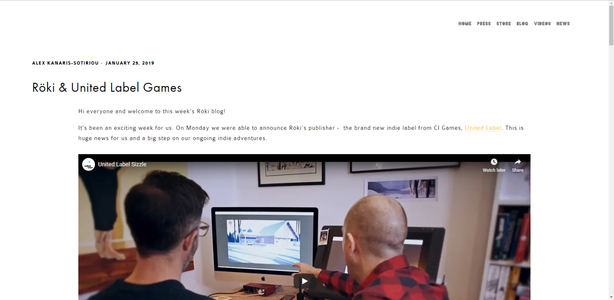
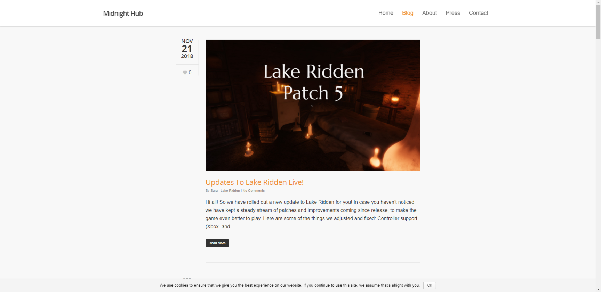
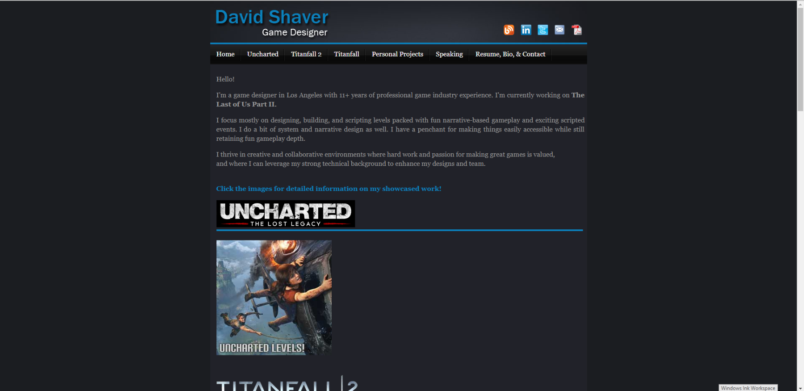
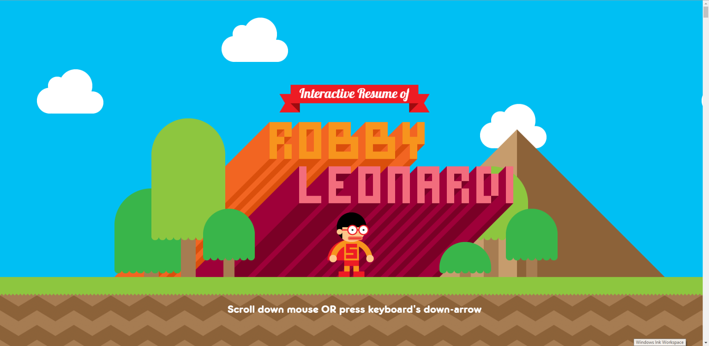
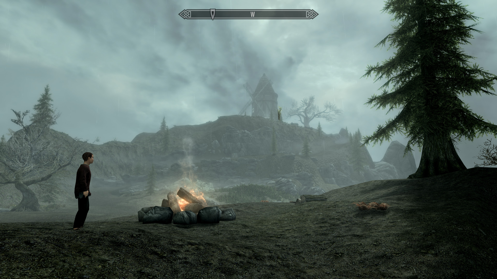

References
Polygon Treehouse Blog
A straightforward clean design allows for the content that is distributed to easily acknowledge and also be separated by different webpages to keep a formal place for content such as video, imagery, and text.
I like this website because it is so simple and clean, any sort of creative piece that would be posted will stand out from the website itself, which I find important when using it as a portfolio.
Midnight Hub Blog
Midnight Hub's Blog is designed to keep content at its forfront while keeping a clean look to express what is most important to them, their video game content and news.
I like this website because it does what I find it most important when it comes to showing off your content, and that is a clean and straighforward design that shows off what they want to show. It is much like the other websites, but it is a fluently clean concept that I relate to most.
David Shaver Game Design Portfolio
David Shaver’s portfolio follows a simple design by keeping everything at the forefront on one page, while making subpages go into greater detail for those interested. By separating content, he is capable of giving the more important info first, but also allowing the viewer to seek out more information with more clicks.
Shaver's website has this simplicity, much like the other websites I have shown, but his gives this simplicity upfront on his main page. There isn't much clutter, but Shaver gives the option for people to find greater detail by clicking around and going to sub-pages which I find to be a great design for keeping a clean website.
Robby Leonardi
Robby Leonardi is raising a higher bar in Web Development by using his expertise in illustration, animation and web programming. His interactive resume allows for the viewer to see information in a fun and interesting way by being interactions. Robby's design keeps you looking at new and interesting animations and illustrations which sets his website apart from others by including his works within the design of the website.
I liks this website because it is plainly an etension of what the designer can do within the building blocks of the website itself. While there would have to be countless hours of developing such a toolset, it is one I commemorate.
Content
Playtest Podcast

Here is my Podcast in which I interview indipendent video game creators. I hold this Podcast close to me and see this as content I would like to display on a portfolio, because I find that it expresses the industry in which I want to get into, and also brings about topics that I bring up day to day. Here I have a link, an image, and also an audio file that you can check out!
Frontier

Frontier is a game that I put together with existing code and art through the Unreal Engine for a Computer Science project. You can check it out on itch.io!
Skyrim Blackmore Ridge Mod
Here is my work in Game Design on a Mod I made for The Elder Scolls V: Skyrim.
Unreal Apartment Project

Here is a project of mine in designing a player space within the Unreal Engine.
Website Copyright Dane Kubicka, all content belongs to their rightful owners.